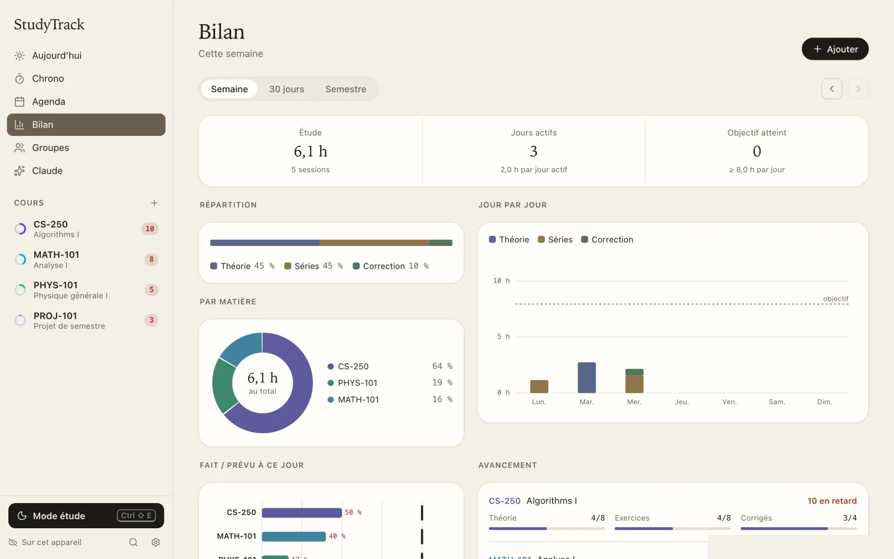
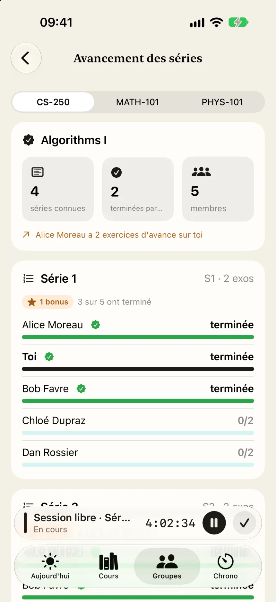
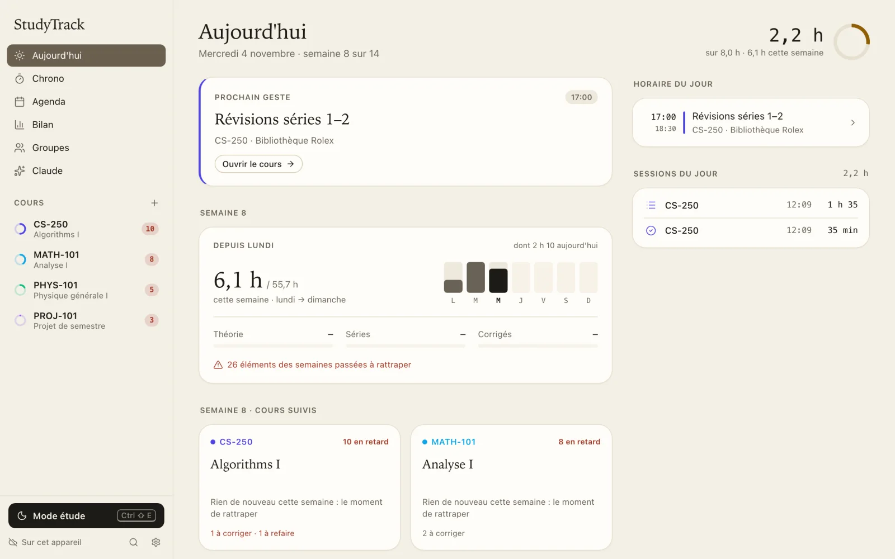

iPhone
Bêta publique sur TestFlight
Rejoindre la bêtaInstalle d'abord TestFlight depuis l'App Store, puis ouvre le lien de la bêta sur ton iPhone. Les mises à jour arrivent ensuite toutes seules.
StudyTrack est l'app qui lit tes cours EPFL et te dit, chaque matin, quoi faire : la vidéo à rattraper, la série à rendre, l'exercice à refaire.
Gratuit, sans pub. Fait par un étudiant, pas affilié à l'EPFL.
Tu entres ton compte EPFL sur la page de l'EPFL, comme d'habitude. StudyTrack parcourt ensuite chacun de tes cours, sur Moodle, Botafogo, Courseware ou Ed, et range chaque vidéo, chaque série et chaque corrigé dans la bonne semaine. Ton horaire IS-Academia vient avec.
Quand un prof publie une nouvelle série le soir, elle t'attend le lendemain matin. Tu n'as plus besoin de faire le tour des sites pour savoir où tu en es.

Être assis dans un auditoire, ce n'est pas forcément travailler. Alors c'est toi qui décides ce qui compte : les cours où tu étais vraiment, les séances d'exercices, le temps passé sur tes séries avec le chrono.
À la fin de la semaine, tu vois honnêtement où tu en es par rapport à ce que tes crédits demandent. Pas de points, pas de trophées, juste tes heures.

Le mode étude ouvre la série sur l'exercice du jour, avec le cours juste à côté. Si tu bloques, Claude te donne un indice pour repartir, jamais la solution toute faite. Pas d'abonnement Claude ? Un tuteur gratuit prend le relais.
Ta musique joue, la calculatrice trace tes fonctions, ta fiche de révision est là. Et sur ordinateur, tu peux mettre tout le reste de côté le temps de la session.

Crée un groupe avec tes amis de section. Vous voyez qui travaille en ce moment et où chacun en est dans les séries. Une question sur un exercice part chiffrée : seuls les membres du groupe peuvent la lire.
Avec le chrono commun, vous faites vos pauses en même temps, chacun sur son travail. Comme à la bibliothèque, mais depuis ta chambre.

StudyTrack existe sur iPhone, Mac et Windows, et tes données te suivent de l'un à l'autre. La synchronisation est chiffrée sur tes appareils : même nous ne pouvons pas la lire.
Pas de pub, pas de traceur, et aucun compte n'est obligatoire pour commencer. Ce qui reste chez toi, et ce qui en sort.

Bêta publique sur TestFlight
Rejoindre la bêtaInstalle d'abord TestFlight depuis l'App Store, puis ouvre le lien de la bêta sur ton iPhone. Les mises à jour arrivent ensuite toutes seules.
macOS 14 ou plus récent
Télécharger pour MacOuvre le fichier téléchargé et glisse StudyTrack dans Applications. L'app est signée et vérifiée par Apple, elle s'ouvre sans avertissement, et elle te prévient quand une nouvelle version sort.
Windows 10 et 11, 64 bits
Télécharger pour WindowsLance l'installeur et suis les étapes. Si Windows affiche un écran bleu « SmartScreen », clique sur « Informations complémentaires » puis « Exécuter quand même ». Tu gères un parc de machines ? Il y a aussi un installeur MSI.
Un problème ? Dans l'app : Réglages › Signaler un problème, ou studytrack@hczr.ch.
In English. StudyTrack is a free app for EPFL students on iPhone, Mac and Windows. It reads your courses (Moodle, Botafogo, Courseware, Ed, IS-Academia) and lays out lectures, exercise sheets and deadlines week by week, counts the hours you actually study, and gives you a focused study desk and study groups. Sync is end-to-end encrypted. Privacy policy